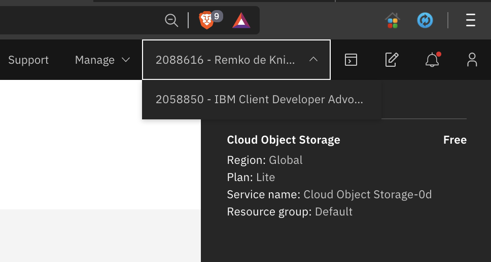
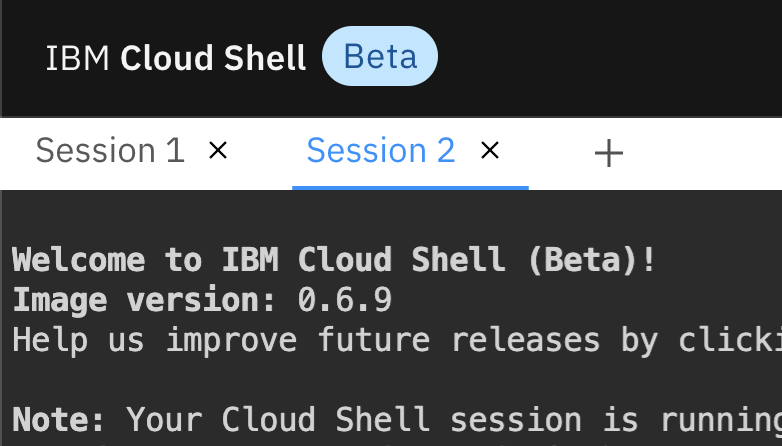
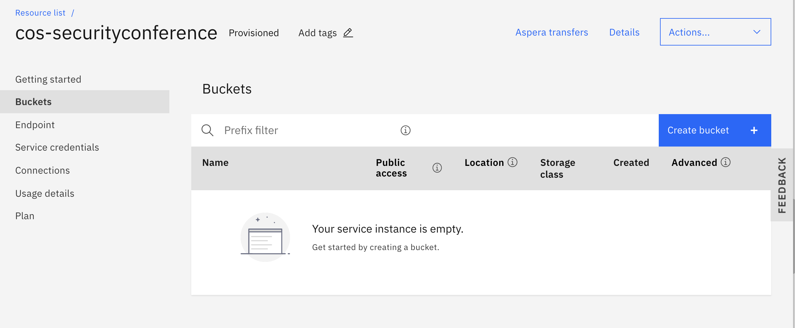
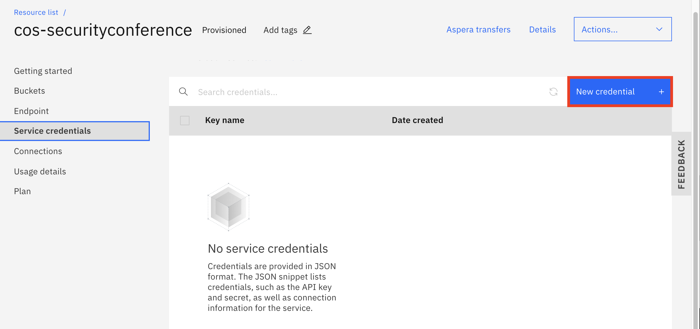

Lab02 - Adding Secure Encrypted Object Storage using a Persistent Volume for MongoDB with S3FS-Fuse¶
Pre-requisites¶
Before starting the exercise, you need to have
- an IBM Cloud account
- an instance of IBM Kubernetes Service (https://cloud.ibm.com/kubernetes/catalog/create)
- an instance of IBM Cloud Object Storage (https://cloud.ibm.com/catalog/services/cloud-object-storage)
- access to the IBM Cloud Shell,
Overview of IBM Cloud Object Storage¶
An important part of data security and persistence on Kubernetes depends on physical storage outside the container orchestration engine that Kubernetes is. You can use PersistentVolume and PersistentVolumeClaim to map data directories to external physical storage. But also, data persistence on a stateless platform like Kubernetes should require extra attention.
IBM Cloud Object Storage (COS) offers a few exceptional features that help secure data on Kubernetes. IBM Cloud Object Storage (COS) actively participates in several industry compliance programs and provides the following compliance, certifications, attestations, or reports as measure of proof:
- ISO 27001,
- PCI-DSS for Payment Card Industry (PCI) USA,
- HIPAA for Healthcare USA, (including administrative, physical, and technical safeguards required of Business Associates in 45 CFR Part 160 and Subparts A and C of Part 164),
- ISO 22301 Business Continuity Management,
- ISO 27017,
- ISO 27018,
- ISO 31000 Risk Management Principles,
- ISO 9001 Quality Management System,
- SOC1 Type 2 (SSAE 16), (System and Organization Controls 1),
- SOC2 Type 2 (SSAE 16), (System and Organization Controls 2),
- CSA STAR Level 1 (Self-Assessment),
- General Data Protection Regulation (GDPR) ready,
- Privacy shield certified.
At a high level, information on IBM Cloud Object Storage (COS) is encrypted, then dispersed across multiple geographic locations, and accessed over popular protocols like HTTP with a RESTful API.
SecureSlice distributes the data in slices across geo locations so that no full copy of data exists on any individual storage node, and automatically encrypts each segment of data before it is erasure coded and dispersed.
The content can only be re-assembled through IBM Cloud’s Accesser technology at the client’s primary data center, where the data was originally received, and decrypted again by SecureSlice.
Data-in-place or data-at-rest security is ensured when you persist database contents in IBM Cloud Object Storage.
You also have a choice to use integration capabilities with IBM Cloud Key Management Services like IBM Key Protect (using FIPS 140-2 Level 3 certified hardware security modules (HSMs)) and Hyper Protect Crypto Services (built on FIPS 140-2 Level 4-certified hardware) for enhanced security features and compliance.
Overview of IBM Cloud Object Storage Plugin¶
This lab uses the IBM Cloud Object Storage plugin to connect an encrypted Object Storage to the Kubernetes cluster via PersistentVolume. A MongoDB database is setup that persists its data to a highly encrypted IBM Cloud Object Storage through PersistentVolume. A sample Java Spring Boot application stores its data in the MongoDB database and its data gets encrypted and persisted.
IBM Cloud Object Storage plugin is a Kubernetes volume plugin that enables Kubernetes pods to access IBM Cloud Object Storage buckets. The plugin has two components: a dynamic provisioner and a FlexVolume driver for mounting the buckets using s3fs-fuse on a worker node.
s3fs allows Linux and macOS to mount an S3 bucket via FUSE.

IBM Cloud Shell¶
The IBM Cloud Shell is a web-based terminal running as a container on a Kubernetes cluster in the IBM Cloud. It provides common CLIs when you work with container, kubernetes and OpenShift related technologies. The steps in this exercise are written and tested in the Cloud Shell environment.
Lab¶
-
Login to IBM Cloud.
-
Start an instance of
Cloud Shellby either clicking its icon at the top-right corner of the screen or using the urlhttps://shell.cloud.ibm.comin a new browser tab.Note: most of steps in this exercise will be performed in
Cloud Shell. Important: ACloud Shellsession times out after it's idle for more than 60 minutes. When aCloud Shellsession times out, you'll lose every work that was performed during the session, if it's not persistent. For example, any CLI tool installation in aCloud Shellwill be lost after the session expires. Cloud Shell is a shell environment running in a container. -
In the
Cloud Shell, login to IBM Cloud from the CLI tool.ibmcloud loginor if using Single Sign On,
ibmcloud login -sso -
Retieve your cluster information.
$ ibmcloud ks clusters Name ID State Created Workers Location Version Resource Group Name Provider yourcluster br78vuhd069a00er8s9g normal 1 day ago 1 Dallas 1.16.10_1533 default classic -
For your convenience, store your IKS cluster name in a environment variable
CLUSTERNAMEfor future reference.export CLUSTERNAME=<your cluster name> -
Connect to your cluster instance.
$ ibmcloud ks cluster config --cluster $CLUSTERNAME Added context for leez-iks-1node to the current kubeconfig file. You can now execute 'kubectl' commands against your cluster. For example, run 'kubectl get nodes'. -
Verify the connection to your cluster.
kubectl config current-context kubectl get nodes
Installing Helm v3¶
You are going to install IBM Cloud Object Storage Plugin via Helm v3 CLI. At the time of writing, by default, Helm v2.16 was installed on the Cloud Shell.
-
In the
Cloud Shell, download and unzip Helm v3.2.wget https://get.helm.sh/helm-v3.2.0-linux-amd64.tar.gz tar -zxvf helm-v3.2.0-linux-amd64.tar.gz -
Make Helm v3 CLI available in your
PATHenvironment variable.echo 'export PATH=$HOME/linux-amd64:$PATH' > .bash_profile source .bash_profile -
Verify Helm v3 installation.
$ helm version --short v3.2.0+ge11b7ce
Preparing IBM Cloud Object Storage Service Instance¶
If you have an existing IBM Cloud Object Storage service instance, you can use it for the remaining of the exercise.
-
If you don't have any
IBM Cloud Object Storageservice instance or prefer to create a new instance for this exercise, go to https://cloud.ibm.com/catalog/services/cloud-object-storage and create a Lite plan of Cloud Object Storage for free. You can only have 1 single free Lite instance per account. -
Note, that if you are using a pre-created cluster you are now logged into a different account than your personal account, because the other account is where the clusters were created for you. On this other account you do not have permission to create new services, so switch to your personal account first before you create the new service.

-
If you are using the CLI to create a new service, in the
Cloud Shellopen a new session, and login to your personal account,
-
You also need a resource group at the time of writing, but none was created when you created a new account recently yet,
Check if you already have a resource-group
ibmcloud resource groups OK Name ID Default Group State Default 282d2f25256540499cf99b43b34025bf true ACTIVEIf you do not have a resource group yet, create one,
$ ibmcloud resource group-create Default Creating resource group Default under account 5081ea1988f14a66a3ddf9d7fb3c6b29 as remko@remkoh.dev... OK Resource group Default was created. Resource Group ID: 93f7a4cd3c824c0cbe90d8f21b46f758 -
Create a new Object Storage instance via CLI command, for the lab you can use a
Liteplan.ibmcloud resource service-instance-create <instance-name> cloud-object-storage <plan> global -g DefaultFor example,
$ ibmcloud resource service-instance-create cos-securityconference cloud-object-storage Lite global -g Default OK Service instance cos-securityconference was created. Name: cos-securityconference ID: crn:v1:bluemix:public:cloud-object-storage:global:a/ e65910fa61ce9072d64902d03f3d4774:fef2d369-5f88-4dcc-bbf1-9afffcd9ccc7:: GUID: fef2d369-5f88-4dcc-bbf1-9afffcd9ccc7 Location: global State: active Type: service_instance Sub Type: Allow Cleanup: false Locked: false Created at: 2020-05-29T15:55:26Z Updated at: 2020-05-29T15:55:26Z Last Operation: Status create succeeded Message Completed create instance operation -
Now you need to add credentials.
-
You can do this from the CLI,
ibmcloud resource service-key-create my-cos-lab2-credentials Writer --instance-name "cos-securityconference" --parameters '{"HMAC":true}' ibmcloud resource service-key my-cos-lab2-credentials -
Or via the web UI. In a browser, navigate to
https://cloud.ibm.com/resourceswhich shows a list of your services providioned in your cloud account. -
Expand the
Storagesection. -
Locate and select your
IBM Cloud Object Storageservice instance.

- Navigate to the
Service credentialstab.

-
Click on
New credentialbutton. -
Change the name to reference the Cloud Object Storage, e.g.
my-cos-lab2-credentials -
For
RoleacceptWriter, -
Accept all other default settings, and select
Addto create a new one. -
Expand your new service credentials, you will need the credentials to configure the persistent volume later, and take a note of
apikeyin yourService credentialandnameof yourIBM Cloud Object Storageservice instance.

- For your convenience, in the
Cloud Shellstore information in environment variables, store the Object Storage service name inCOS_SERVICEand the credentials apikey inCOS_APIKEY. Store each environment variable in cloud shell sessions for both accounts if you are using both your personal account and the pre-created account.
In the Cloud Shell,
export COS_SERVICE=cos-securityconference
export COS_APIKEY=H4pWU7tKDIA0D95xQrDPmjwvA5JB4CuHXbCAn6I6bg5H
Note: replace the example values with your own!
-
Retrieve
GUIDof yourIBM Cloud Object Storageservice instance. Note, that you should open a separate session in the cloud shell and be logged in to your own personal account. You have to be logged in to the account where the COS instance was created.$ ibmcloud resource service-instance $COS_SERVICE | grep GUID GUID: fef2d369-5f88-4dcc-bbf1-9afffcd9ccc7 -
For your convenience, store information in environment variable
COS_GUID.export COS_GUID=fef2d369-5f88-4dcc-bbf1-9afffcd9ccc7Note: replace the example value with your own GUID.
-
From the
Cloud Shelllogged in to the account where your cluster was created, create aKubernetes Secretto store the COS service credentials namedcos-write-access.$ kubectl create secret generic cos-write-access --type=ibm/ibmc-s3fs --from-literal=api-key=$COS_APIKEY --from-literal=service-instance-id=$COS_GUID secret/cos-write-access created
Installing IBM Cloud Object Storage Plugin¶
You are going to install the IBM Cloud Object Storage Plugin in your cluster, using the Helm CLI tool in this section.
-
In the
Cloud Shellwith access to your remote cluster, add a Helm repository whereIBM Cloud Object Storage Pluginchart resides.$ helm repo add ibm-charts https://icr.io/helm/ibm-charts `ibm-charts` has been added to your repositories -
Refresh your local Helm repository.
$ helm repo update Hang tight while we grab the latest from your chart repositories... ...Successfully got an update from the "ibm-charts" chart repository Update Complete. ⎈ Happy Helming!⎈ -
Download and unzip the
IBM Cloud Object Storageplugin to your client, then install the plugin to your cluster from local client.$ helm pull --untar ibm-charts/ibm-object-storage-plugin $ ls -al $ helm plugin install ./ibm-object-storage-plugin/helm-ibmc Installed plugin: ibmc -
Housekeeping to allow execution of the
ibmc.shscript by making the file executable.chmod 755 $HOME/.local/share/helm/plugins/helm-ibmc/ibmc.sh -
Verify the
IBM Cloud Object Storageinstallation. The plugin usage information should be displayed when running the command below.helm ibmc --help
Configuring IBM Cloud Object Storage Plugin¶
Before using the IBM Cloud Object Storage Plugin, configuration changes are required.
-
In the
Cloud Shellwhere you downloaded the IBM Cloud Object Storage plugin, navigate to the templates folder of theIBM Cloud Object Storage Plugininstallation.cd ibm-object-storage-plugin/templates && ls -al -
Make sure the
provisioner-sa.yamlfile is present and configure it to access the COS service using the COS service credentials secretcos-write-accessthat you created in the previous section. -
Open file
provisioner-sa.yamlin a editor.vi provisioner-sa.yaml -
Search for content
ibmcloud-object-storage-secret-readerin the file. To move to the right section in the file, in thevieditor, - Type colon
: - Type
/ibmcloud-object-storage-secret-reader -
Press
<ENTER>key -
Find the section below in the
vieditor. It's a few lines down.rules: - apiGroups: [""] resources: ["secrets"] #resourceNames: [""] -
Use the
<i>key to change toInsertmode in vim, uncomment the line and change the section to set the secret tocos-write-accessand allow access to the COS instance,rules: - apiGroups: [""] resources: ["secrets"] resourceNames: ["cos-write-access"] -
Save the change and quit the
vieditor. - Press
<ESC>key - Type
:wq - Press
<ENTER>key
Now, install the configured storage classes for IBM Cloud Object Storage,
-
In the
Cloud Shell, navigate back to the user root folder.cd $HOME -
Install the configured storage classes for
IBM Cloud Object Storage, which will use the edited template file.$ helm ibmc install ibm-object-storage-plugin ./ibm-object-storage-plugin Helm version: v3.2.0+ge11b7ce Installing the Helm chart... PROVIDER: CLASSIC DC: hou02 Chart: ./ibm-object-storage-plugin NAME: ibm-object-storage-plugin LAST DEPLOYED: Sat May 23 17:45:25 2020 NAMESPACE: default STATUS: deployed REVISION: 1 NOTES: Thank you for installing: ibm-object-storage-plugin. Your release is named: ibm-object-storage-plugin -
Verify that the storage classes are created successfully.
$ kubectl get storageclass | grep 'ibmc-s3fs' ibmc-s3fs-cold-cross-region ibm.io/ibmc-s3fs 43h ibmc-s3fs-cold-regional ibm.io/ibmc-s3fs 43h ibmc-s3fs-flex-cross-region ibm.io/ibmc-s3fs 43h ibmc-s3fs-flex-perf-cross-region ibm.io/ibmc-s3fs 43h ibmc-s3fs-flex-perf-regional ibm.io/ibmc-s3fs 43h ibmc-s3fs-flex-regional ibm.io/ibmc-s3fs 43h ibmc-s3fs-standard-cross-region ibm.io/ibmc-s3fs 43h ibmc-s3fs-standard-perf-cross-region ibm.io/ibmc-s3fs 43h ibmc-s3fs-standard-perf-regional ibm.io/ibmc-s3fs 43h ibmc-s3fs-standard-regional ibm.io/ibmc-s3fs 43h ibmc-s3fs-vault-cross-region ibm.io/ibmc-s3fs 43h ibmc-s3fs-vault-regional ibm.io/ibmc-s3fs 43h -
Verify that plugin pods are in "Running" state and indicate
READYstate of1/1:$ kubectl get pods -n kube-system -o wide | grep object ibmcloud-object-storage-driver-jwbcw 1/1 Running 0 43h 10.185.199.31 10.185.199.31 <none> <none> ibmcloud-object-storage-plugin-654fc7cd86-kcs8n 1/1 Running 0 43h 172.30.194.209 10.185.199.31 <none> <none>If the pods are not
READYand indicate0/1then wait and re-run the command until theREADYstate says1/1.The installation is successful when one
ibmcloud-object-storage-pluginpod and one or moreibmcloud-object-storage-driverpods are inrunningstate.The number of
ibmcloud-object-storage-driverpods equals the number of worker nodes in your cluster. All pods must be in aRunningstate for the plug-in to function properly. If the pods fail, runkubectl describe pod -n kube-system <pod_name>to find the root cause for the failure. -
Execute the command below until all pods are in
Runningstate with1/1.$ kubectl get pods -n kube-system -o wide | grep object ibmcloud-object-storage-driver-jwbcw 1/1 Running 0 43h 10.185.199.31 10.185.199.31 <none> <none> ibmcloud-object-storage-plugin-654fc7cd86-kcs8n 1/1 Running 0 43h 172.30.194.209 10.185.199.31 <none> <none>
Review the Object Storage Configuration¶
IBM Cloud Kubernetes Service provides pre-defined storage classes that you can use to create buckets with a specific configuration.
-
List available storage classes in IBM Cloud Kubernetes Service.
kubectl get storageclasses | grep s3The Lite service plan for Cloud Object Storage includes Regional and Cross Regional resiliency, flexible data classes, and built in security. For the sample application, I will choose the
standardandregionaloptions in theibmc-s3fs-standard-regionalstorageclass that is typical for web or mobile apps and we don't need cross-regional resilience beyond resilience per zones for our workshop app, but the options to choose for usage strategies and therefor the pricing of storageclasses for the bucket is very granular. -
Review the detailed IBM Cloud Object Storage bucket configuration for a storage class.
$ kubectl describe storageclass ibmc-s3fs-standard-regional Name: ibmc-s3fs-standard-regional IsDefaultClass: No Annotations: meta.helm.sh/release-name=ibm-object-storage-plugin,meta.helm.sh/release-namespace=default Provisioner: ibm.io/ibmc-s3fs Parameters: ibm.io/chunk-size-mb=16,ibm.io/curl-debug=false,ibm.io/debug-level=warn,ibm.io/iam-endpoint=https://iam.bluemix.net,ibm.io/kernel-cache=true,ibm.io/multireq-max=20,ibm.io/object-store-endpoint=NA,ibm.io/object-store-storage-class=NA,ibm.io/parallel-count=2,ibm.io/s3fs-fuse-retry-count=5,ibm.io/stat-cache-size=100000,ibm.io/tls-cipher-suite=AESGCM AllowVolumeExpansion: <unset> MountOptions: <none> ReclaimPolicy: Delete VolumeBindingMode: Immediate Events: <none>Additional information is available at https://cloud.ibm.com/docs/containers?topic=containers-object_storage#configure_cos.
Create Bucket¶
Data in the IBM Cloud Object Storage is stored and organized in so-called buckets. To create a new bucket in your IBM Cloud Object Storage service instance,
-
In the
Cloud Shellin the session logged in to the account that owns the Cloud Object Storage instance, assign a name to the new bucket. The bucket name MUST be globally unique in the IBM Cloud. A simple way to ensure this is to use a random hash or your username as part of the name. If the bucket name is not globally unique, the command in the next step will fail.export COS_BUCKET=<username>-bucket-lab2 -
Create a new bucket.
$ ibmcloud cos create-bucket --ibm-service-instance-id $COS_GUID --class Standard --bucket $COS_BUCKET OK Details about bucket <username>-bucket-lab2: Region: us-south Class: Standard -
Verify the new bucket was created successfully.
$ ibmcloud cos list-buckets --ibm-service-instance-id $COS_GUID OK 1 bucket found in your account: Name Date Created <username>-bucket-lab2 May 29, 2020 at 21:22:37 -
Get your object storage configurations,
$ ibmcloud cos config list Key Value Last Updated Default Region us-south Download Location /home/remkohdev/Downloads CRN AccessKeyID SecretAccessKey Authentication Method IAM URL Style VHostThis will list your default region.
To list your bucket's location use
$ ibmcloud cos get-bucket-location --bucket $COS_BUCKET OK Details about bucket remkohdev123-bucket-lab2: Region: us-south Class: StandardWith your bucket's location, e.g.
us-south, you can find your bucket's private endpoint here https://cloud.ibm.com/docs/cloud-object-storage?topic=cloud-object-storage-endpoints#advanced-endpoint-types, OR in the following steps you find it in your Cloud Object Storage's bucket configuration. -
In a browser, navigate to https://cloud.ibm.com/resources.
-
Expand the Storage section .
-
Locate and select your IBM Cloud Object Storage service instance.
-
In the left menu, select the
bucketssection Select your newbucketin theBucketstab. -
Select the
Configurationtab underBucketsiin the left pane.
-
Take note of the
Privateendpoint. -
For your convenience, store the information in environment variable. In the Cloud Shell,
export PRIVATE_ENDPOINT=s3.private.us-south.cloud-object-storage.appdomain.cloudNote: replace the endpoint with the one that you identied in the previous setp.
Create the PersistentVolumeClaim¶
Depending on the settings that you choose in your PVC, you can provision IBM Cloud Object Storage in the following ways:
- Dynamic provisioning: When you create the PVC, the matching persistent volume (PV) and the bucket in your IBM Cloud Object Storage service instance are automatically created.
- Static provisioning: You can reference an existing bucket in your IBM Cloud Object Storage service instance in your PVC. When you create the PVC, only the matching PV is automatically created and linked to your existing bucket in IBM Cloud Object Storage.
In this exercise, you are going to use an existing bucket when assigning persistant storage to IKS container.
-
In the cloud shell connected to your cluster, create a
PersistentVolumeClaimconfiguration file.Note: Replace the values for: -
ibm.io/bucket, -ibm.io/secret-nameand -ibm.io/endpoint.If your values are not exactly matching with the bucket name you created, the secret name you created and the private endpoint of your bucket, the PVC will remain in state pending and fail to create.
Note: The
secret-nameshould be set tocos-write-accessunless you changed the name of the secret we created earlier, Note:ibm.io/endpointshould be set to the output of commandecho "https://$PRIVATE_ENDPOINT"Create the file first and then edit the file withviif changes are needed, -
Create the file,
$ echo 'kind: PersistentVolumeClaim apiVersion: v1 metadata: name: my-iks-pvc namespace: default annotations: ibm.io/auto-create-bucket: "false" ibm.io/auto-delete-bucket: "false" ibm.io/bucket: "<your-cos-bucket>" ibm.io/secret-name: "cos-write-access" ibm.io/endpoint: "https://s3.private.us-south.cloud-object-storage.appdomain.cloud" spec: accessModes: - ReadWriteOnce resources: requests: storage: 8Gi storageClassName: ibmc-s3fs-standard-regional' > my-iks-pvc.yaml -
Edit the file and set the right values if changes are still needed,
vi my-iks-pvc.yaml -
Create a
PersistentVolumeClaim.$ kubectl apply -f my-iks-pvc.yaml persistentvolumeclaim/my-iks-pvc created -
Verify the
PersistentVolumeClaimand through the PVC also thePersistentVolumeor PV was created successfully and that the PVC hasSTATUSofBound.$ kubectl get pvc NAME STATUS VOLUME CAPACITY ACCESS MODES STORAGECLASS AGE my-iks-pvc Bound pvc-1a1f4bce-a8fe-4bd8-a160-f9268af2d18a 8Gi RWO ibmc-s3fs-standard-regional 4sNote: If the state of the PVC remains
Pending, you can inspect the error for why the PVC remains pending by using thedescribecommand:kubectl describe pvc <pvc_name>. For example,kubectl describe pvc my-iks-pvc. Note: If the state of the PVC stays asPending, the problem must be resolved before you move to the next step. -
Verify a new
PersistentVolumewas also created successfully.$ kubectl get pv NAME CAPACITY ACCESS MODES RECLAIM POLICY STATUS CLAIM STORAGECLASS REASON AGE pvc-1a1f4bce-a8fe-4bd8-a160-f9268af2d18a 8Gi RWO Delete Bound default/my-iks-pvc ibmc-s3fs-standard-regional 74s
You're now ready to persistly store data on the IBM Cloud Object Storage within your containers in IKS clusters.
Deploy MongoDB to IKS Cluster and Persist its Datastore in IBM Cloud Object Storage¶
In this section, you are going to deploy an instance of MongoDB to your IKS cluster and persistly store data on the IBM Cloud Object Storage.
-
We will skip this step, but if you want to configure the MongoDB via a
values.yamlfile, or want to review the default values of the Helm chart, in theCloud Shell, download the defaultvalues.yamlfile from the bitnami/mongodb Helm chart, which is used to configure and deploy the MongoDB Helm chart. In this lab we will overwrite the values from the commandline when we install the chart.wget https://raw.githubusercontent.com/bitnami/charts/master/bitnami/mongodb/values.yaml -
We will skip this step also, but if you want to review the configuration options, open the
values.yamlfile in a file editor and review the parameters that can be modified during mongdb deployment. In this exercise however, you'll overwrite the default values using Helm command parameters instead of avalues.yamlfile. -
Add the bitnami Helm repository.
$ helm repo add bitnami https://charts.bitnami.com/bitnami "bitnami" has been added to your repositories $ helm repo update -
Install MongoDB using helm with parameters, the flag
persistence.enabled=truewill enable storing your data to a PersistentVolume.$ helm install mongodb bitnami/mongodb --set persistence.enabled=true --set persistence.existingClaim=my-iks-pvc --set livenessProbe.initialDelaySeconds=180 --set mongodbRootPassword=passw0rd --set mongodbUsername=user1 --set mongodbPassword=passw0rd --set mongodbDatabase=mydb --set service.type=ClusterIP NAME: mongodb LAST DEPLOYED: Sat May 23 21:04:44 2020 NAMESPACE: default STATUS: deployed REVISION: 1 TEST SUITE: None NOTES: ** Please be patient while the chart is being deployed ** MongoDB can be accessed via port 27017 on the following DNS name from within your cluster: mongodb.default.svc.cluster.local To get the root password run: export MONGODB_ROOT_PASSWORD=$(kubectl get secret --namespace default mongodb -o jsonpath="{.data.mongodb-root-password}" | base64 --decode) To get the password for "my-user" run: export MONGODB_PASSWORD=$(kubectl get secret --namespace default mongodb -o jsonpath="{.data.mongodb-password}" | base64 --decode) To connect to your database run the following command: kubectl run --namespace default mongodb-client --rm --tty -i --restart='Never' --image docker.io/bitnami/mongodb:4.2.7-debian-10-r0 --command -- mongo admin --host mongodb --authenticationDatabase admin -u root -p $MONGODB_ROOT_PASSWORD To connect to your database from outside the cluster execute the following commands: kubectl port-forward --namespace default svc/mongodb 27017:27017 & mongo --host 127.0.0.1 --authenticationDatabase admin -p $MONGODB_ROOT_PASSWORD -
Note: if you used the same cluster for lab1 and lab2, then you can uninstall the existing
MongoDBinstance from lab1 by typinghelm uninstall mongodb. Wait a few minutes, to give Kubernetes time to terminate all resources associated with the chart. -
Note, the service type for MongoDB is set to
ClusterIPwith the Helm parameter--set service.type=ClusterIP, so that MongoDB can only be accessed within the cluster. -
Retrieve and save MongoDB passwords in environment variables.
$ export MONGODB_ROOT_PASSWORD=$(kubectl get secret --namespace default mongodb -o jsonpath="{.data.mongodb-root-password}" | base64 --decode) $ export MONGODB_PASSWORD=$(kubectl get secret --namespace default mongodb -o jsonpath="{.data.mongodb-password}" | base64 --decode) $ echo $MONGODB_ROOT_PASSWORD passw0rd $ echo $MONGODB_PASSWORD passw0rd -
Verify the MongoDB deployment.
$ kubectl get deployment NAME READY UP-TO-DATE AVAILABLE AGE mongodb 1/1 1 1 6m30sNote: It may take several minutes until the deployment is completed and the container initialized, wait till the
READYstate is1/1. -
Verify that pods are running.
$ kubectl get pod NAME READY STATUS RESTARTS AGE mongodb-9f76c9485-sjtqx 1/1 Running 0 5m40sNote: It may take a few minutes until the deployment is completed and pod turns to
Runningstate. -
Verify that the internal MongoDB port 27017 within the container is not exposed externally,
$ kubectl get svc mongodb NAME TYPE CLUSTER-IP EXTERNAL-IP PORT(S) AGE mongodb ClusterIP 172.21.131.154 <none> 27017/TCP 41s
Verify MongoDB Deployment¶
To verify MongoDB deployment,
-
In
Cloud Shell, retrieve pod ID.$ kubectl get pod NAME READY STATUS RESTARTS AGE mongodb-9f76c9485-sjtqx 1/1 Running 0 5m40s -
Start an interactive terminal to the pod, you need to use your own unique pod name with the hashes.
$ kubectl exec -it <your pod name> bash I have no name!@<your pod name>:/$ -
Start a MongoDB CLI session.
$ mongo --host 127.0.0.1 --authenticationDatabase admin -p $MONGODB_ROOT_PASSWORD MongoDB shell version v4.2.7 connecting to: mongodb://127.0.0.1:27017/?authSource=admin&compressors=disabled&gssapiServiceName=mongodb Implicit session: session { "id" : UUID("a638b7d1-d00d-4de2-954b-ee6309c251b2") } MongoDB server version: 4.2.7 Welcome to the MongoDB shell. For interactive help, type "help". For more comprehensive documentation, see http://docs.mongodb.org/ Questions? Try the support group http://groups.google.com/group/mongodb-user 2020-05-30T04:27:20.416+0000 I STORAGE [main] In File::open(), ::open for '//.mongorc.js' failed with Permission denied > -
Switch to your database.
> use mydb switched to db mydb -
Authenticate a MongoDB connection.
> db.auth("user1", "passw0rd") 1 -
Create a
collection.> db.createCollection("customer") { "ok" : 1 } -
Verify the collection creation.
> db.getCollection('customer') mydb.customer -
Create one data entry in MongoDB.
> db.customer.insertOne( { firstName: "John", lastName: "Smith" } ) { "acknowledged" : true, "insertedId" : ObjectId("5ed1e4319bdb52022d624bdf") } -
Retrieve the data entry in the MongoDB.
> db.customer.find({ lastName: "Smith" }) { "_id" : ObjectId("5ed1e4319bdb52022d624bdf"), "firstName" : "John", "lastName" : "Smith" } -
Type
exittwice to back to theCloud Shell. -
Your mongodb is now saving values, and if your Cloud Object Storage and bucket were configured correctly, your customer information is now securely stored.
-
If you review the bucket in your Object Storage, MongoDB should now be writing its data files to the object storage.